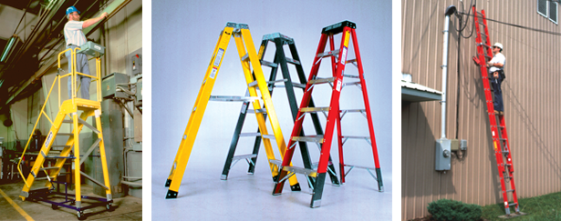

About Us
Our Story
New Heights Ladder Co. started out in 1978 as a small shop in northern Alberta, mainly selling to painters and storage companies. The company was founded by Henery Jones and Janet Wiggins. They started out as partners but in 1983 they made an arrangement and split the partnership. Henry is currently the CEO of the company while Janet is a owner and regional manager for a select few stores in Alberta. Slowly over the years they expanded across Canada coast to coast, and in 2005 they expanded to the U.S.. In total there are now over 250 stores in Canada alone and over 100 stores in the United States and growing. Soon they are looking to open stores in Europe
Why Us
We became well known and a go to store for ladders as they have excellent service with a variety of stock to fit any need from small jobs around the house, to large industrial jobs. This is perfectly complimented by well trained staff that has exceptional knowledge to help any customer find the perfect fit for their needs.
Our Promise to Satisfy
We carry only the best products and have them tested in every aspect to make sure they meet ours and your expectations. We have 100% faith in the products so we give all a FIVE-YEAR WARRENTY! We also stay aware of our competitors to make sure we give you the most competitive prices we can. If they have the same product for less, we'll match them! If you still are not satisfied with our products we have a 30-day window for full refunds.
